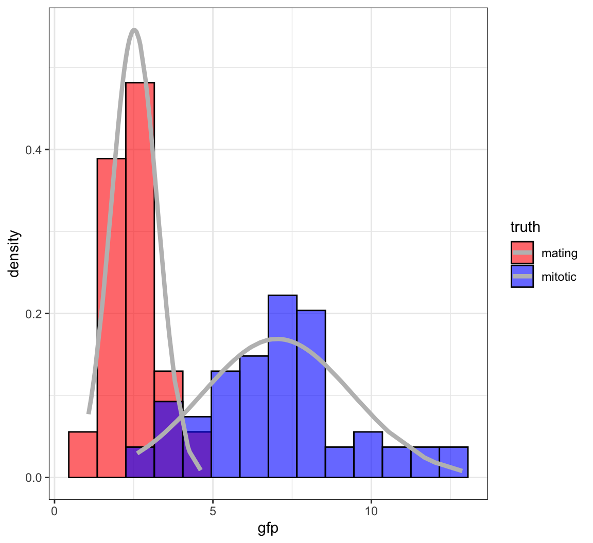
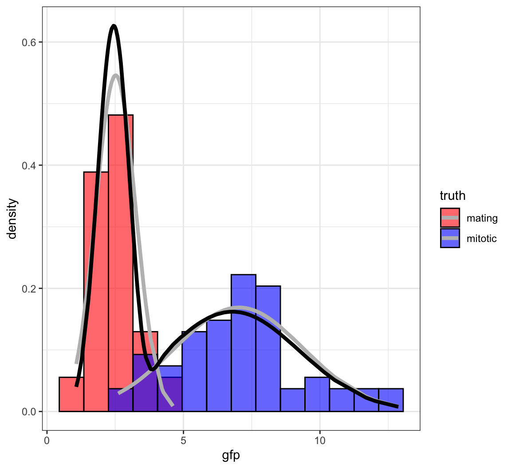

We will assume that \((X_1, X_2, \ldots, X_n) | \theta {\; \stackrel{\text{iid}}{\sim}\;}F_{\theta}\) with prior distribution \(\theta \sim F_{\tau}\) unless stated otherwise. Shorthand for the former is \(\boldsymbol{X} | \theta {\; \stackrel{\text{iid}}{\sim}\;}F_{\theta}\).
We will write the pdf or pmf of \(X\) as \(f(x | \theta)\) as opposed to \(f(x ; \theta)\) because in the Bayesian framework this actually represents conditional probability.
We will write the pdf or pmf of \(\theta\) as \(f(\theta)\) or \(f(\theta ; \tau)\) or \(f(\theta | \tau)\). Always remember that prior distributions require paramater values, even if we don’t explicitly write them.
The posterior distribution of \(\theta | \boldsymbol{X}\) is obtained through Bayes theorem:
\[\begin{align*} f(\theta | \boldsymbol{x}) & = \frac{f(\boldsymbol{x} | \theta) f(\theta)}{f(\boldsymbol{x})} = \frac{f(\boldsymbol{x} | \theta) f(\theta)}{\int f(\boldsymbol{x} | \theta^*) f(\theta^*) d\theta^*} \\ & \propto L(\theta ; \boldsymbol{x}) f(\theta) \end{align*}\]A very common point estimate of \(\theta\) in Bayesian inference is the posterior expected value:
\[\begin{align*} \operatorname{E}[\theta | \boldsymbol{x}] & = \int \theta f(\theta | \boldsymbol{x}) d\theta \\ & = \frac{\int \theta L(\theta ; \boldsymbol{x}) f(\theta) d\theta}{\int L(\theta ; \boldsymbol{x}) f(\theta) d\theta} \end{align*}\]The Bayesian analog of the frequentist confidence interval is the \(1-\alpha\) posterior interval, where \(C_{\ell}\) and \(C_{u}\) are determined so that:
\[ 1-\alpha = \Pr(C_\ell \leq \theta \leq C_u | \boldsymbol{x}) \]
The maximum a posteriori probability (MAP) is the value (or values) of \(\theta\) that maximize the posterior pdf or pmf:
\[\begin{align*} \hat{\theta}_{\text{MAP}} & = \operatorname{argmax}_\theta \Pr(\theta | \boldsymbol{x}) \\ & = \operatorname{argmax}_\theta L(\theta ; \boldsymbol{x}) f(\theta) \end{align*}\]This is a frequentist-esque use of the Bayesian framework.
Let \(\mathcal{L}\left(\theta, \tilde{\theta}\right)\) be a loss function for a given estimator \(\tilde{\theta}\). Examples are
\[ \mathcal{L}\left(\theta, \tilde{\theta}\right) = \left(\theta - \tilde{\theta}\right)^2 \mbox{ or } \mathcal{L}\left(\theta, \tilde{\theta}\right) = \left|\theta - \tilde{\theta}\right|. \]
Note that, where the expected value is over \(f(\boldsymbol{x}; \theta)\):
\[\begin{align*} \operatorname{E}\left[\left(\theta - \tilde{\theta}\right)^2\right] & = \left(\operatorname{E}\left[\tilde{\theta}\right] - \theta\right)^2 + \operatorname{Var}\left(\tilde{\theta}\right) \\ & = \mbox{bias}^2 + \mbox{variance} \end{align*}\]The Bayes risk, \(R\left(\theta, \tilde{\theta}\right)\), is the expected loss with respect to the posterior:
\[ {\operatorname{E}}\left[ \left. \mathcal{L}\left(\theta, \tilde{\theta}\right) \right| \boldsymbol{x} \right] = \int \mathcal{L}\left(\theta, \tilde{\theta}\right) f(\theta | \boldsymbol{x}) d\theta \]
The Bayes estimator minimizes the Bayes risk.
The posterior expectation \({\operatorname{E}}\left[ \left. \theta \right| \boldsymbol{x} \right]\) minimizes the Bayes risk of \(\mathcal{L}\left(\theta, \tilde{\theta}\right) = \left(\theta - \tilde{\theta}\right)^2\).
The median of \(f(\theta | \boldsymbol{x})\), calculated by \(F^{-1}_{\theta | \boldsymbol{x}}(1/2)\), minimizes the Bayes risk of \(\mathcal{L}\left(\theta, \tilde{\theta}\right) = \left|\theta - \tilde{\theta}\right|\).
Let \((X_1, X_2, \ldots, X_n) | \theta {\; \stackrel{\text{iid}}{\sim}\;}F_\theta\) where \(\theta \in \Theta\) and \(\theta \sim F_{\tau}\). Let \(\Theta_0, \Theta_1 \subseteq \Theta\) so that \(\Theta_0 \cap \Theta_1 = \varnothing\) and \(\Theta_0 \cup \Theta_1 = \Theta\).
Given observed data \(\boldsymbol{x}\), we wish to classify whether \(\theta \in \Theta_0\) or \(\theta \in \Theta_1\).
This is the Bayesian analog of hypothesis testing.
Let \(H\) be a rv such that \(H=0\) when \(\theta \in \Theta_0\) and \(H=1\) when \(\theta \in \Theta_1\).
From the prior distribution on \(\theta\), we can calculate
\[ \Pr(H=0) = \int_{\theta \in \Theta_0} f(\theta) d\theta \]
and \(\Pr(H=1) = 1-\Pr(H=0)\).
Using Bayes theorem, we can also calculate
\[\begin{align*} \Pr(H=0 | \boldsymbol{x}) & = \frac{f(\boldsymbol{x} | H=0) \Pr(H=0)}{f(\boldsymbol{x})} \\ & = \frac{\int_{\theta \in \Theta_0} f(\boldsymbol{x} | \theta) f(\theta) d\theta}{\int_{\theta \in \Theta} f(\boldsymbol{x} | \theta) f(\theta) d\theta} \end{align*}\]where note that \(\Pr(H=1 | \boldsymbol{x}) = 1-\Pr(H=0 | \boldsymbol{x})\).
Let \(\mathcal{L}\left(\tilde{H}, H\right)\) be such that
\[\begin{align*} \mathcal{L}\left(\tilde{H}=1, H=0 \right) & = c_{I}\\ \mathcal{L}\left(\tilde{H}=0, H=1 \right) & = c_{II} \end{align*}\]for some \(c_{I}, c_{II} > 0\).
The Bayes risk, \(R\left(\tilde{H}, H\right)\), is
\[\begin{align*} \operatorname{E}\left[ \left. \mathcal{L}\left(\theta, \tilde{\theta}\right) \right| \boldsymbol{x} \right] & = c_{I} \Pr(\tilde{H}=1, H=0) + c_{II} \Pr(\tilde{H}=0, H=1) \\ & = c_{I} \Pr(\tilde{H}=1 | H=0) \Pr(H=0) \\ & \quad\quad + c_{II} \Pr(\tilde{H}=0 | H=1) \Pr(H=1) \end{align*}\]Notice how this balances what frequentists call Type I error and Type II error.
The estimate \(\tilde{H}\) that minimizes \(R\left(\tilde{H}, H\right)\) is
\[\tilde{H}=1 \mbox{ when } \Pr(H=1 | \boldsymbol{x}) \geq \frac{c_{I}}{c_{I} + c_{II}}\]
and \(\tilde{H}=0\) otherwise.
A conjugate prior is a prior distribution for a data generating distribution so that the posterior distribution is of the same type as the prior.
Conjugate priors are useful for obtaining stratightforward calculations of the posterior.
There is a systematic method for calculating conjugate priors for exponential family distributions.
Suppose \(\boldsymbol{X} | \mu {\; \stackrel{\text{iid}}{\sim}\;}\mbox{Bernoulli}(p)\) and suppose that \(p \sim \mbox{Beta}(\alpha, \beta)\).
\[\begin{align*} f(p | \boldsymbol{x}) & \propto L(p ; \boldsymbol{x}) f(p) \\ & = p^{\sum x_i} (1-p)^{\sum (1-x_i)} p^{\alpha - 1} (1-p)^{\beta-1} \\ & = p^{\alpha - 1 + \sum x_i} (1-p)^{\beta - 1 + \sum (1-x_i)} \\ & \propto \mbox{Beta}(\alpha + \sum x_i, \beta + \sum (1-x_i)) \end{align*}\]Therefore, \[ {\operatorname{E}}[p | \boldsymbol{x}] = \frac{\alpha + \sum x_i}{\alpha + \beta + n}. \]
Suppose \(\boldsymbol{X} | \mu {\; \stackrel{\text{iid}}{\sim}\;}\mbox{Normal}(\mu, \sigma^2)\), where \(\sigma^2\) is known, and suppose that \(\mu \sim \mbox{Normal}(a, b^2)\).
Then it can be shown that \(\mu | \boldsymbol{x} \sim \mbox{Normal}({\operatorname{E}}[\mu | \boldsymbol{x}], {\operatorname{Var}}(\mu | \boldsymbol{x}))\) where
\[ {\operatorname{E}}[\mu | \boldsymbol{x}] = \frac{b^2}{\frac{\sigma^2}{n} + b^2} \overline{x} + \frac{\frac{\sigma^2}{n}}{\frac{\sigma^2}{n} + b^2} a \]
\[ {\operatorname{Var}}(\mu | \boldsymbol{x}) = \frac{b^2 \frac{\sigma^2}{n}}{\frac{\sigma^2}{n} + b^2} \]
If we do inference based on prior \(\theta \sim F_{\tau}\) to obtain \(f(\theta | \boldsymbol{x}) \propto L(\theta; \boldsymbol{x}) f(\theta)\), it follows that this inference may not be invariant to transformations of \(\theta\), such as \(\eta = g(\theta)\).
If we utilize a Jeffreys prior, which means it is such that
\[f(\theta) \propto \sqrt{I(\theta)}\]
then the prior will be invariant to transformations of \(\theta\). We would want to show that \(f(\theta) \propto \sqrt{I(\theta)}\) implies \(f(\eta) \propto \sqrt{I(\eta)}\).
Normal\((\mu, \sigma^2)\), \(\sigma^2\) known: \(f(\mu) \propto 1\)
Normal\((\mu, \sigma^2)\), \(\mu\) known: \(f(\sigma) \propto \frac{1}{\sigma}\)
Poisson\((\lambda)\): \(f(\lambda) \propto \frac{1}{\sqrt{\lambda}}\)
Bernoulli\((p)\): \(f(p) \propto \frac{1}{\sqrt{p(1-p)}}\)
An improper prior is a prior such that \(\int f(\theta) d\theta = \infty\). Nevertheless, sometimes it still may be the case that \(f(\theta | \boldsymbol{x}) \propto L(\theta; \boldsymbol{x}) f(\theta)\) yields a probability distribution.
Take for example the case where \(\boldsymbol{X} | \mu {\; \stackrel{\text{iid}}{\sim}\;}\mbox{Normal}(\mu, \sigma^2)\), where \(\sigma^2\) is known, and suppose that \(f(\mu) \propto 1\). Then \(\int f(\theta) d\theta = \infty\), but
\[ f(\theta | \boldsymbol{x}) \propto L(\theta; \boldsymbol{x}) f(\theta) \sim \mbox{Normal}\left(\overline{x}, \sigma^2/n\right)\]
which is a proper probability distribution.
Under the scenario that \(\boldsymbol{X} | \theta {\; \stackrel{\text{iid}}{\sim}\;}F_{\theta}\) with prior distribution \(\theta \sim F_{\tau}\), we have to determine values for \(\tau\).
The empirical Bayes approach uses the observed data to estimate the prior parameter(s), \(\tau\).
This is especially useful for high-dimensional data when many parameters are simultaneously drawn from a prior with multiple observations drawn per parameter realization.
The usual approach is to first integrate out the parameter to obtain
\[ f(\boldsymbol{x} ; \tau) = \int f(\boldsymbol{x} | \theta) f(\theta ; \tau) d\theta. \]
An estimation method (such as MLE) is then applied to estimate \(\tau\). Then inference proceeds as usual under the assumption that \(\theta \sim f(\theta ; \hat{\tau})\).
Suppose that \(X_i | \mu_i \sim \mbox{Normal}(\mu_i, 1)\) for \(i=1, 2, \ldots, n\) where these rv’s are independent. Also suppose that \(\mu_i {\; \stackrel{\text{iid}}{\sim}\;}\mbox{Normal}(a, b^2)\).
\[ f(x_i ; a, b) = \int f(x_i | \mu_i) f(\mu_i; a, b) d\mu_i \sim \mbox{Normal}(a, 1+b^2). \]
\[ \implies \hat{a} = \overline{x}, \ 1+\hat{b}^2 = \frac{\sum_{k=1}^n (x_k - \overline{x})^2}{n} \]
Frequentist model:
\[X_1, X_2, \ldots, X_n {\; \stackrel{\text{iid}}{\sim}\;}F_{{\boldsymbol{\theta}}}\]
Bayesian model:
\[X_1, X_2, \ldots, X_n | {\boldsymbol{\theta}}{\; \stackrel{\text{iid}}{\sim}\;}F_{{\boldsymbol{\theta}}} \mbox{ and } {\boldsymbol{\theta}}\sim F_{\boldsymbol{\tau}}\]
Sometimes it’s not possible to find formulas for \(\hat{{\boldsymbol{\theta}}}_{\text{MLE}}\), \(\hat{{\boldsymbol{\theta}}}_{\text{MAP}}\), \({\operatorname{E}}[{\boldsymbol{\theta}}| {\boldsymbol{x}}]\), or \(f({\boldsymbol{\theta}}| {\boldsymbol{x}})\). We have to use numerical methods instead.
Frequently used numerical approaches to likelihood based inference:
Latent variables (or hidden variables) are random variables that are present in the model, but unobserved.
We will denote latent variables by \(Z\), and we will assume \[(X_1, Z_1), (X_2, Z_2), \ldots, (X_n, Z_n) {\; \stackrel{\text{iid}}{\sim}\;}F_{{\boldsymbol{\theta}}}.\] A realized value of \(Z\) is \(z\), \({\boldsymbol{Z}}= (Z_1, Z_2, \ldots, Z_n)^T\), etc.
The EM algorithm and variational inference involve latent variables.
Bayesian models are a special case of latent variable models: the unobserved random parameters are latent variables.
In the earlier EB example, we supposed that \(X_i | \mu_i \sim \mbox{Normal}(\mu_i, 1)\) for \(i=1, 2, \ldots, n\) where these rv’s are independent, and also that \(\mu_i {\; \stackrel{\text{iid}}{\sim}\;}\mbox{Normal}(a, b^2)\).
The unobserved parameters \(\mu_1, \mu_2, \ldots, \mu_n\) are latent variables. In this case, \({\boldsymbol{\theta}}= (a, b^2)\).
Suppose \({X_1, X_2, \ldots, X_n}{\; \stackrel{\text{iid}}{\sim}\;}F_{{\boldsymbol{\theta}}}\) where \({\boldsymbol{\theta}}= (\pi_1, \ldots, \pi_K, \mu_1, \ldots, \mu_K, \sigma^2_1, \ldots, \sigma^2_K)\) with pdf
\[ f({\boldsymbol{x}}; {\boldsymbol{\theta}}) = \prod_{i=1}^n \sum_{k=1}^K \pi_k \frac{1}{\sqrt{2\pi\sigma^2_k}} \exp \left\{ -\frac{(x_i - \mu_k)^2}{2 \sigma^2_k} \right\}. \]
The MLEs of the unknown paramaters cannot be found analytically. This is a mixture common model to work with in applications, so we need to be able to estimate the parameters.
There is a latent variable model that produces the same maerginal distribution and likelihood function. Let \({\boldsymbol{Z}}_1, {\boldsymbol{Z}}_2, \ldots, {\boldsymbol{Z}}_n {\; \stackrel{\text{iid}}{\sim}\;}\mbox{Multinomial}_K(1, {\boldsymbol{\pi}})\) where \({\boldsymbol{\pi}}= (\pi_1, \ldots, \pi_K)\). Note that \(Z_{ik} \in \{0, 1\}\) and \(\sum_{k=1}^K Z_{ik} = 1\). Let \([X_i | Z_{ik} = 1] \sim \mbox{Normal}(\mu_k, \sigma^2_k)\), where \(\{X_i | {\boldsymbol{Z}}_i\}_{i=1}^{n}\) are jointly independent.
The joint pdf is
\[ f({\boldsymbol{x}}, {\boldsymbol{z}}; {\boldsymbol{\theta}}) = \prod_{i=1}^n \prod_{k=1}^K \left[ \pi_k \frac{1}{\sqrt{2\pi\sigma^2_k}} \exp \left\{ -\frac{(x_i - \mu_k)^2}{2 \sigma^2_k} \right\} \right]^{z_{ik}}. \]
Note that
\[ f({\boldsymbol{x}}, {\boldsymbol{z}}; {\boldsymbol{\theta}}) = \prod_{i=1}^n f(x_i, {\boldsymbol{z}}_i; {\boldsymbol{\theta}}). \] It can be verified that \(f({\boldsymbol{x}}; {\boldsymbol{\theta}})\) is the marginal distribution of this latent variable model:
\[ f(x_i ; {\boldsymbol{\theta}}) = \sum_{{\boldsymbol{z}}_i} f(x_i, {\boldsymbol{z}}_i; {\boldsymbol{\theta}}) = \sum_{k=1}^K \pi_k \frac{1}{\sqrt{2\pi\sigma^2_k}} \exp \left\{ -\frac{(x_i - \mu_k)^2}{2 \sigma^2_k} \right\}. \]
Suppose \({X_1, X_2, \ldots, X_n}{\; \stackrel{\text{iid}}{\sim}\;}F_{{\boldsymbol{\theta}}}\) where \({\boldsymbol{\theta}}= (\pi_1, \ldots, \pi_K, p_1, \ldots, p_K)\) with pdf
\[ f({\boldsymbol{x}}; {\boldsymbol{\theta}}) = \prod_{i=1}^n \sum_{k=1}^K \pi_k p_k^{x_i} (1-p_k)^{1-x_i}. \]
As in the Normal mixture model, the MLEs of the unknown paramaters cannot be found analytically.
As before, there is a latent variable model that produces the same maerginal distribution and likelihood function. Let \({\boldsymbol{Z}}_1, {\boldsymbol{Z}}_2, \ldots, {\boldsymbol{Z}}_n {\; \stackrel{\text{iid}}{\sim}\;}\mbox{Multinomial}_K(1, {\boldsymbol{\pi}})\) where \({\boldsymbol{\pi}}= (\pi_1, \ldots, \pi_K)\). Note that \(Z_{ik} \in \{0, 1\}\) and \(\sum_{k=1}^K Z_{ik} = 1\). Let \([X_i | Z_{ik} = 1] \sim \mbox{Bernoulli}(p_k)\), where \(\{X_i | {\boldsymbol{Z}}_i\}_{i=1}^{n}\) are jointly independent.
The joint pdf is
\[ f({\boldsymbol{x}}, {\boldsymbol{z}}; {\boldsymbol{\theta}}) = \prod_{i=1}^n \prod_{k=1}^K \left[ p_k^{x_i} (1-p_k)^{1-x_i} \right]^{z_{ik}}. \]
For any likelihood function, \(L({\boldsymbol{\theta}}; {\boldsymbol{x}}) = f({\boldsymbol{x}}; {\boldsymbol{\theta}})\), there is an abundance of optimization methods that can be used to find the MLE or MAP. However:
The expectation-maximization (EM) algorithm allows us to calculate MLEs and MAPs when certain geometric properties are satisfied in the probabilistic model.
In order for the EM algorithm to be a practical approach, then we should have a latent variable model \(f({\boldsymbol{x}}, {\boldsymbol{z}}; {\boldsymbol{\theta}})\) that is used to do inference on \(f({\boldsymbol{x}}; {\boldsymbol{\theta}})\) or \(f({\boldsymbol{\theta}}| {\boldsymbol{x}})\).
Note: Sometimes \(({\boldsymbol{x}}, {\boldsymbol{z}})\) is called the complete data and \({\boldsymbol{x}}\) is called the observed data when we are using the EM as a method for dealing with missing data.
Choose initial value \({\boldsymbol{\theta}}^{(0)}\)
Calculate \(f({\boldsymbol{z}}| {\boldsymbol{x}}, {\boldsymbol{\theta}}^{(t)})\)
Calculate \[Q({\boldsymbol{\theta}}, {\boldsymbol{\theta}}^{(t)}) = {\operatorname{E}}_{{\boldsymbol{Z}}|{\boldsymbol{X}}={\boldsymbol{x}}}\left[\log f({\boldsymbol{x}}, {\boldsymbol{Z}}; {\boldsymbol{\theta}}); {\boldsymbol{\theta}}^{(t)}\right]\]
Set \[{\boldsymbol{\theta}}^{(t+1)} = {\text{argmax}}_{{\boldsymbol{\theta}}} Q({\boldsymbol{\theta}}, {\boldsymbol{\theta}}^{(t)})\]
Iterate until convergence and set \(\widehat{{\boldsymbol{\theta}}} = {\boldsymbol{\theta}}^{(\infty)}\)
Continuous \({\boldsymbol{Z}}\):
\[Q({\boldsymbol{\theta}}, {\boldsymbol{\theta}}^{(t)}) = \int \log f({\boldsymbol{x}}, {\boldsymbol{z}}; {\boldsymbol{\theta}}) f({\boldsymbol{z}}| {\boldsymbol{x}}; {\boldsymbol{\theta}}^{(t)}) d{\boldsymbol{z}}\]
Discrete \({\boldsymbol{Z}}\):
\[Q({\boldsymbol{\theta}}, {\boldsymbol{\theta}}^{(t)}) = \sum_{{\boldsymbol{z}}} \log f({\boldsymbol{x}}, {\boldsymbol{z}}; {\boldsymbol{\theta}}) f({\boldsymbol{z}}| {\boldsymbol{x}}; {\boldsymbol{\theta}}^{(t)})\]
If we wish to calculate the MAP we replace \(Q({\boldsymbol{\theta}}, {\boldsymbol{\theta}}^{(t)})\) with
\[Q({\boldsymbol{\theta}}, {\boldsymbol{\theta}}^{(t)}) = {\operatorname{E}}_{{\boldsymbol{Z}}|{\boldsymbol{X}}={\boldsymbol{x}}}\left[\log f({\boldsymbol{x}}, {\boldsymbol{Z}}; {\boldsymbol{\theta}}); {\boldsymbol{\theta}}^{(t)}\right] + \log f({\boldsymbol{\theta}})\]
where \(f({\boldsymbol{\theta}})\) is the prior distribution on \({\boldsymbol{\theta}}\).
Returning to the Normal mixture model introduced earlier, we first calculate
\[ \log f({\boldsymbol{x}}, {\boldsymbol{z}}; {\boldsymbol{\theta}}) = \sum_{i=1}^n \sum_{k=1}^K z_{ik} \log \pi_k + z_{ik} \log \phi(x_i; \mu_k, \sigma^2_k) \]
where
\[ \phi(x_i; \mu_k, \sigma^2_k) = \frac{1}{\sqrt{2\pi\sigma^2_k}} \exp \left\{ -\frac{(x_i - \mu_k)^2}{2 \sigma^2_k} \right\}. \]
In caculating
\[Q({\boldsymbol{\theta}}, {\boldsymbol{\theta}}^{(t)}) = {\operatorname{E}}_{{\boldsymbol{Z}}|{\boldsymbol{X}}={\boldsymbol{x}}}\left[\log f({\boldsymbol{x}}, {\boldsymbol{Z}}; {\boldsymbol{\theta}}); {\boldsymbol{\theta}}^{(t)}\right]\]
we only need to know \({\operatorname{E}}_{{\boldsymbol{Z}}|{\boldsymbol{X}}={\boldsymbol{x}}}[Z_{ik} | {\boldsymbol{x}}; {\boldsymbol{\theta}}]\), which turns out to be
\[ {\operatorname{E}}_{{\boldsymbol{Z}}|{\boldsymbol{X}}={\boldsymbol{x}}}[Z_{ik} | {\boldsymbol{x}}; {\boldsymbol{\theta}}] = \frac{\pi_k \phi(x_i; \mu_k, \sigma^2_k)}{\sum_{j=1}^K \pi_j \phi(x_i; \mu_j, \sigma^2_j)}. \]
Note that we take
\[Q({\boldsymbol{\theta}}, {\boldsymbol{\theta}}^{(t)}) = {\operatorname{E}}_{{\boldsymbol{Z}}|{\boldsymbol{X}}={\boldsymbol{x}}}\left[\log f({\boldsymbol{x}}, {\boldsymbol{Z}}; {\boldsymbol{\theta}}); {\boldsymbol{\theta}}^{(t)}\right]\]
so the parameter in \(\log f({\boldsymbol{x}}, {\boldsymbol{Z}}; {\boldsymbol{\theta}})\) is a free \({\boldsymbol{\theta}}\), but the paramaters used to take the conditional expectation of \({\boldsymbol{Z}}\) are fixed at \({\boldsymbol{\theta}}^{(t)}\). Let’s define
\[ \hat{z}_{ik}^{(t)} = {\operatorname{E}}\left[z_{ik} | {\boldsymbol{x}}; {\boldsymbol{\theta}}^{(t)}\right] = \frac{\pi^{(t)}_k \phi(x_i; \mu^{(t)}_k, \sigma^{2, (t)}_k)}{\sum_{j=1}^K \pi^{(t)}_j \phi(x_i; \mu^{(t)}_j, \sigma^{2, (t)}_j)}. \]
We calculate
\[Q({\boldsymbol{\theta}}, {\boldsymbol{\theta}}^{(t)}) = {\operatorname{E}}_{{\boldsymbol{Z}}|{\boldsymbol{X}}={\boldsymbol{x}}}\left[\log f({\boldsymbol{x}}, {\boldsymbol{Z}}; {\boldsymbol{\theta}}); {\boldsymbol{\theta}}^{(t)}\right]\] \[ = \sum_{i=1}^n \sum_{k=1}^K \hat{z}_{ik}^{(t)} \log \pi_k + \hat{z}_{ik}^{(t)} \log \phi(x_i; \mu_k, \sigma^2_k)\]
At this point the parameters making up \(\hat{z}_{ik}^{(t)}\) are fixed at \({\boldsymbol{\theta}}^{(t)}\).
We now caculate \({\boldsymbol{\theta}}^{(t+1)} = {\text{argmax}}_{{\boldsymbol{\theta}}} Q({\boldsymbol{\theta}}, {\boldsymbol{\theta}}^{(t)}\), which yields:
\[ \pi_k^{(t+1)} = \frac{\sum_{i=1}^n \hat{z}_{ik}^{(t)}}{n} \]
\[ \mu_k^{(t+1)} = \frac{\sum_{i=1}^n \hat{z}_{ik}^{(t)} x_i}{\sum_{i=1}^n \hat{z}_{ik}^{(t)}} \]
\[ \sigma_k^{2, (t+1)} = \frac{\sum_{i=1}^n \hat{z}_{ik}^{(t)} \left(x_i - \mu_k^{(t+1)} \right)^2}{\sum_{i=1}^n \hat{z}_{ik}^{(t)}} \]
Note: You need to use a Lagrange multiplier to obtain \(\{\pi_k^{(t+1)}\}_{k=1}^{K}\).
If we assign one and only one data point to mixture component \(k\), meaning \(\mu_k^{(t)} = x_i\) and \(\hat{z}_{ik}^{(t)}=1\) for some \(k\) and \(i\), then as \(\sigma^{2, (t)}_k \rightarrow 0\), the likelihood goes to \(\infty\).
Therefore, when implementing the EM algorithm for this particular Normal mixture model, we have to be careful to bound all \(\sigma^{2, (t)}_k\) away from zero and avoid this scenario.
Measured ratios of the nuclear to cytoplasmic fluorescence for a protein-GFP construct that is hypothesized as being nuclear in mitotic cells and largely cytoplasmic in mating cells.

> set.seed(508)
> B <- 100
> p <- rep(0,B)
> mu1 <- rep(0,B)
> mu2 <- rep(0,B)
> s1 <- rep(0,B)
> s2 <- rep(0,B)
> p[1] <- runif(1, min=0.1, max=0.9)
> mu.start <- sample(x, size=2, replace=FALSE)
> mu1[1] <- min(mu.start)
> mu2[1] <- max(mu.start)
> s1[1] <- var(sort(x)[1:60])
> s2[1] <- var(sort(x)[61:120])
> z <- rep(0,120)> for(i in 2:B) {
+ z <- (p[i-1]*dnorm(x, mean=mu2[i-1], sd=sqrt(s2[i-1])))/
+ (p[i-1]*dnorm(x, mean=mu2[i-1], sd=sqrt(s2[i-1])) +
+ (1-p[i-1])*dnorm(x, mean=mu1[i-1], sd=sqrt(s1[i-1])))
+ mu1[i] <- sum((1-z)*x)/sum(1-z)
+ mu2[i] <- sum(z*x)/sum(z)
+ s1[i] <- sum((1-z)*(x-mu1[i])^2)/sum(1-z)
+ s2[i] <- sum(z*(x-mu2[i])^2)/sum(z)
+ p[i] <- sum(z)/length(z)
+ }
>
> tail(cbind(mu1, s1, mu2, s2, p), n=3)
mu1 s1 mu2 s2 p
[98,] 2.455325 0.3637967 6.7952 6.058291 0.5340015
[99,] 2.455325 0.3637967 6.7952 6.058291 0.5340015
[100,] 2.455325 0.3637967 6.7952 6.058291 0.5340015
As an exercise, derive the EM algorithm of the Bernoilli mixture model introduced earlier.
Hint: Replace \(\phi(x_i; \mu_k, \sigma^2_k)\) with the appropriate Bernoilli pmf.
Since \({\boldsymbol{\theta}}^{(t+1)} = {\text{argmax}}_{{\boldsymbol{\theta}}} Q({\boldsymbol{\theta}}, {\boldsymbol{\theta}}^{(t)})\), it follows that
\[Q({\boldsymbol{\theta}}^{(t+1)}, {\boldsymbol{\theta}}^{(t)}) \geq Q({\boldsymbol{\theta}}^{(t)}, {\boldsymbol{\theta}}^{(t)}).\]
Chapter 43 of Foundations of Applied Statistics details additional mathematics that shows:
\[ \log f({\boldsymbol{x}}; {\boldsymbol{\theta}}^{(t+1)}) \geq \log f({\boldsymbol{x}}; {\boldsymbol{\theta}}^{(t)}). \]
When performing Bayesian inferece, it is often (but not always) possible to calculate
\[f({\boldsymbol{\theta}}| {\boldsymbol{x}}) \propto L({\boldsymbol{\theta}}; {\boldsymbol{x}}) f({\boldsymbol{\theta}})\]
but it is typically much more difficult to calculate
\[f({\boldsymbol{\theta}}| {\boldsymbol{x}}) = \frac{L({\boldsymbol{\theta}}; {\boldsymbol{x}}) f({\boldsymbol{\theta}})}{f({\boldsymbol{x}})}.\]
Markov chain Monte Carlo is a method for simulating data approximately from \(f({\boldsymbol{\theta}}| {\boldsymbol{x}})\) with knowledge of only \(L({\boldsymbol{\theta}}; {\boldsymbol{x}}) f({\boldsymbol{\theta}})\).
MCMC can be used to approximately simulate data from any distribution that is only proportionally characterized, but it is probably most well know for doing so in the context of Bayesian infererence.
We will explain MCMC in the context of Bayesian inference.
We draw a Markov chain of \({\boldsymbol{\theta}}\) values so that, in some asymptotic sense, these are equivalent to iid draws from \(f({\boldsymbol{\theta}}| {\boldsymbol{x}})\).
The draws are done competitively so that the next draw of a realization of \({\boldsymbol{\theta}}\) depends on the current value.
The Markov chain is set up so that it only depends on \(L({\boldsymbol{\theta}}; {\boldsymbol{x}}) f({\boldsymbol{\theta}})\).
A lot of practical decisions need to be made by the user, so utilize MCMC carefully.
Initialize \({\boldsymbol{\theta}}^{(0)}\)
Generate \({\boldsymbol{\theta}}^{*} \sim q({\boldsymbol{\theta}}| {\boldsymbol{\theta}}^{(b)})\) for some pdf or pmf \(q(\cdot | \cdot)\)
With probablity \[A({\boldsymbol{\theta}}^{*}, {\boldsymbol{\theta}}^{(b)}) = \min\left( 1, \frac{L({\boldsymbol{\theta}}^{*}; {\boldsymbol{x}}) f({\boldsymbol{\theta}}^{*}) q({\boldsymbol{\theta}}^{(b)} | {\boldsymbol{\theta}}^{*})}{L({\boldsymbol{\theta}}^{(b)}; {\boldsymbol{x}}) f({\boldsymbol{\theta}}^{(b)}) q({\boldsymbol{\theta}}^{*} | {\boldsymbol{\theta}}^{(b)})} \right)\] set \({\boldsymbol{\theta}}^{(b+1)} = {\boldsymbol{\theta}}^{*}\). Otherise, set \({\boldsymbol{\theta}}^{(b+1)} = {\boldsymbol{\theta}}^{(b)}\)
Continue for \(b = 1, 2, \ldots, B\) iterations and carefully select which \({\boldsymbol{\theta}}^{(b)}\) are utilized to approximate iid observations from \(f({\boldsymbol{\theta}}| {\boldsymbol{x}})\)
The Metropolis algorithm restricts \(q(\cdot, \cdot)\) to be symmetric so that \(q({\boldsymbol{\theta}}^{(b)} | {\boldsymbol{\theta}}^{*}) = q({\boldsymbol{\theta}}^{*} | {\boldsymbol{\theta}}^{(b)})\) and
\[ A({\boldsymbol{\theta}}^{*}, {\boldsymbol{\theta}}^{(b)}) = \min\left( 1, \frac{L({\boldsymbol{\theta}}^{*}; {\boldsymbol{x}}) f({\boldsymbol{\theta}}^{*})}{L({\boldsymbol{\theta}}^{(b)}; {\boldsymbol{x}}) f({\boldsymbol{\theta}}^{(b)})} \right). \]
Two common uses of the output from MCMC are as follows:
\({\operatorname{E}}[f({\boldsymbol{\theta}}) | {\boldsymbol{x}}]\) is approximated by \[ \hat{{\operatorname{E}}}[f({\boldsymbol{\theta}}) | {\boldsymbol{x}}] = \frac{1}{B} \sum_{b=1}^B f\left({\boldsymbol{\theta}}^{(b)}\right). \]
Some subsequence \({\boldsymbol{\theta}}^{(b_1)}, {\boldsymbol{\theta}}^{(b_2)}, \ldots, {\boldsymbol{\theta}}^{(b_m)}\) from \(\left\{{\boldsymbol{\theta}}^{(b)}\right\}_{b=1}^{B}\) is utilized as an empirical approximation to iid draws from \(f({\boldsymbol{\theta}}| {\boldsymbol{x}})\).
Suppose that \({\boldsymbol{\theta}}= (\theta_1, \theta_2, \ldots, \theta_K)\). Define the subset vector as \({\boldsymbol{\theta}}_{a:b} = (\theta_a, \theta_{a+1}, \ldots, \theta_{b-1}, \theta_b)\) for any \(1 \leq a \leq b \leq K\).
The full conditional of \(\theta_k\) is
\[ \Pr(\theta_k | {\boldsymbol{\theta}}_{1:k-1}, {\boldsymbol{\theta}}_{k+1:K}, {\boldsymbol{x}}) \]
Gibbs sampling a special type of Metropolis-Hasting MCMC. The algorithm samples one coordinate of \({\boldsymbol{\theta}}\) at a time.
As an exercise, show that Gibbs sampling is a special case of the Metropolis-Hastings algorithm where \(A({\boldsymbol{\theta}}^{*}, {\boldsymbol{\theta}}^{(b)}) = 1\).
Stan is probably the currently most popular software for doing Bayesian computation, including MCMC and variational inference.
There are also popular R packages, such as MCMCpack.
> sessionInfo()
R version 3.6.0 (2019-04-26)
Platform: x86_64-apple-darwin15.6.0 (64-bit)
Running under: macOS 10.15.3
Matrix products: default
BLAS: /Library/Frameworks/R.framework/Versions/3.6/Resources/lib/libRblas.0.dylib
LAPACK: /Library/Frameworks/R.framework/Versions/3.6/Resources/lib/libRlapack.dylib
locale:
[1] en_US.UTF-8/en_US.UTF-8/en_US.UTF-8/C/en_US.UTF-8/en_US.UTF-8
attached base packages:
[1] stats graphics grDevices utils datasets methods
[7] base
other attached packages:
[1] forcats_0.5.0 stringr_1.4.0 dplyr_0.8.4
[4] purrr_0.3.3 readr_1.3.1 tidyr_1.0.2
[7] tibble_2.1.3 ggplot2_3.2.1 tidyverse_1.3.0
[10] knitr_1.28
loaded via a namespace (and not attached):
[1] revealjs_0.9 tidyselect_1.0.0 xfun_0.12
[4] haven_2.2.0 lattice_0.20-40 colorspace_1.4-1
[7] vctrs_0.2.3 generics_0.0.2 htmltools_0.4.0
[10] yaml_2.2.1 rlang_0.4.5 pillar_1.4.3
[13] withr_2.1.2 glue_1.3.1 DBI_1.1.0
[16] dbplyr_1.4.2 modelr_0.1.6 readxl_1.3.1
[19] lifecycle_0.1.0 munsell_0.5.0 gtable_0.3.0
[22] cellranger_1.1.0 rvest_0.3.5 evaluate_0.14
[25] labeling_0.3 fansi_0.4.1 broom_0.5.2
[28] Rcpp_1.0.3 scales_1.1.0 backports_1.1.5
[31] jsonlite_1.6.1 farver_2.0.3 fs_1.3.1
[34] hms_0.5.3 digest_0.6.25 stringi_1.4.6
[37] grid_3.6.0 cli_2.0.2 tools_3.6.0
[40] magrittr_1.5 lazyeval_0.2.2 crayon_1.3.4
[43] pkgconfig_2.0.3 xml2_1.2.2 reprex_0.3.0
[46] lubridate_1.7.4 assertthat_0.2.1 rmarkdown_2.1
[49] httr_1.4.1 rstudioapi_0.11 R6_2.4.1
[52] nlme_3.1-144 compiler_3.6.0